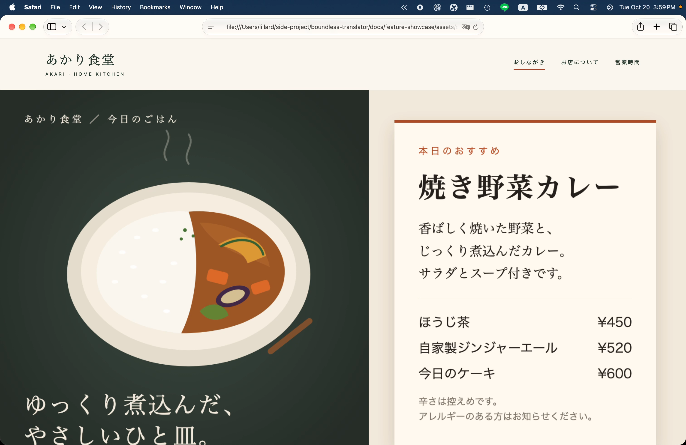
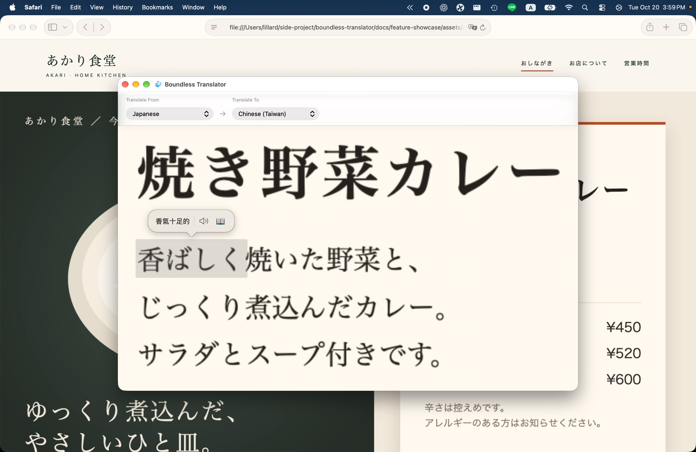
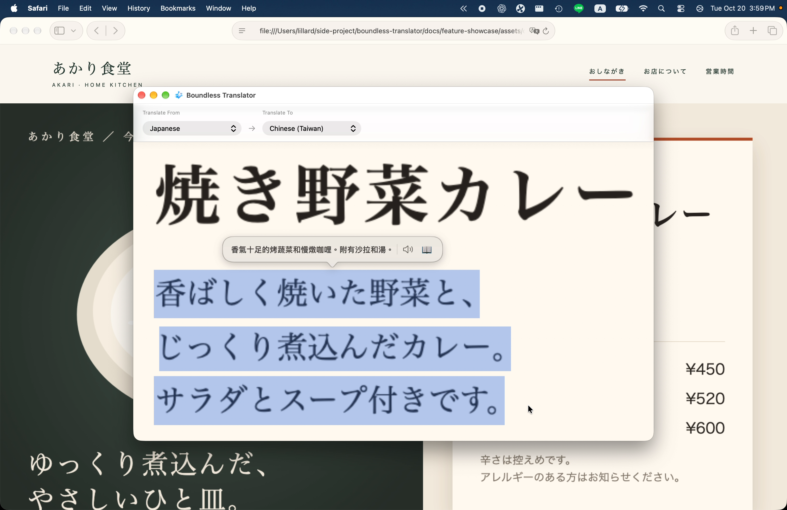
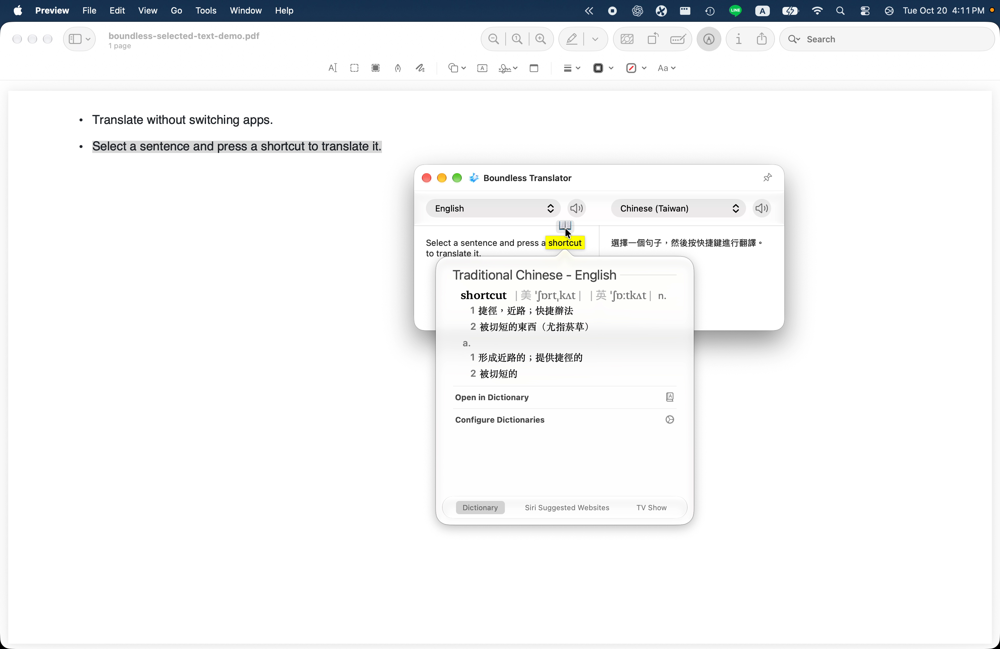
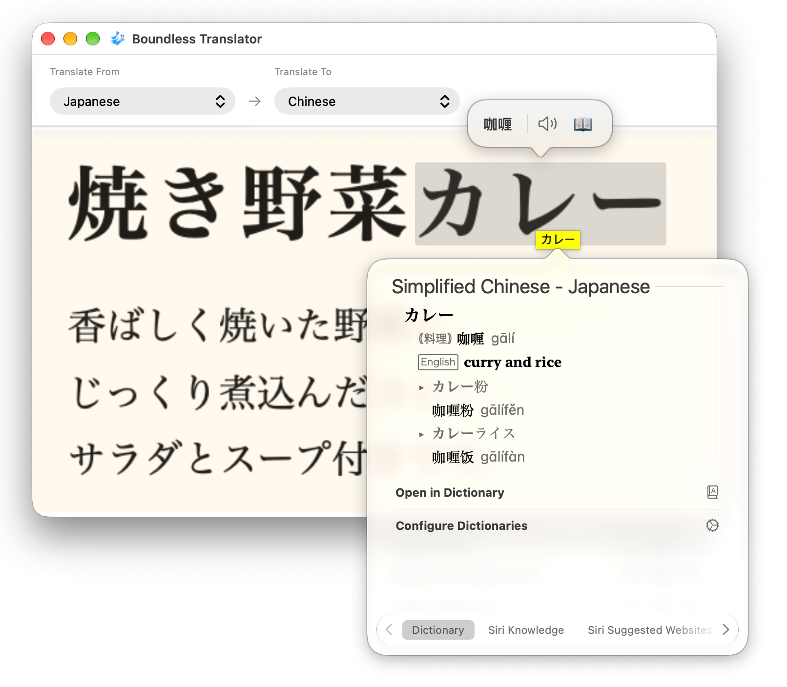

PDF 的反白句子與完整譯文。
selected-text-translation.mov · 4.3 秒 · 原尺寸 PNG

五張 PNG 取自 2026-10-20 重錄版本（選字 16:11、菜單 15:59），尺寸 3024 × 1964；菜單字典使用補拍的 1612 × 1408 PNG。僅菜單原圖移除游標，選字翻譯保留句子旁的游標，其餘操作圖也保留。另保留 Settings 原始截圖。此處展示原始素材，字典保留原始內容。點圖片可看原尺寸。




